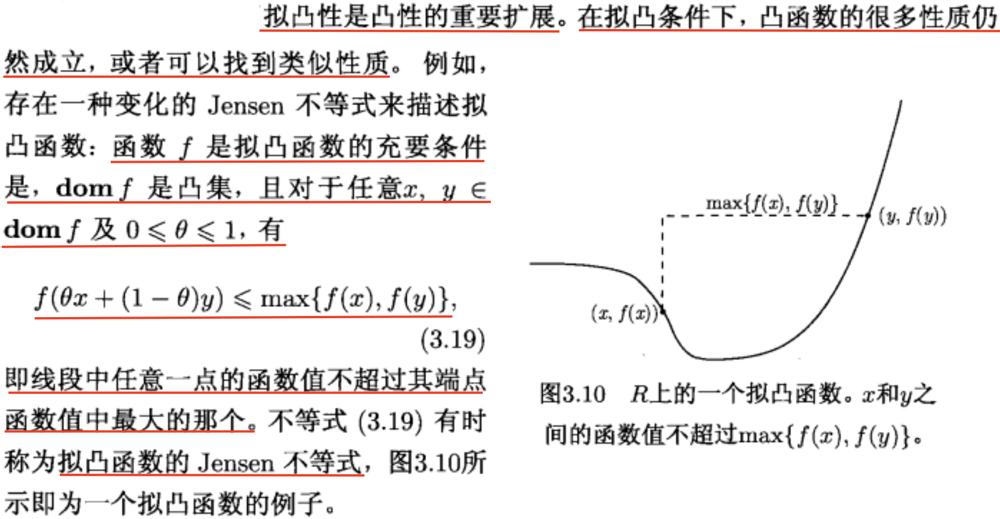

本文是论文<< Convergence of a nonmonotone projected gradient method for nonconvex >>阅读笔记。
近端梯度下降法 (Proximal Gradient Descent):
这种方法是讨论一种特定的凸优化问题
一般而言，近端梯度下降法常用于解决以下这类优化问题：
假设目标函数是由和叠加而成，其中，限定是可微的凸函数, 是不可微 (或局部不可微) 的凸函数。
我们会发现：次梯度法可能不会像我们所期许的那样，得到真正的稀疏解, 次梯度法只会使解的部分数值 (即的部分元素) 尽可能小 (尽可能接近)。因此，只有选用近端梯度下降这类方法，我们才能获得稀疏解，并同时提升迭代过程的收敛性。
Quasi-Convex and Pseudo-Convex:
如图所示，

首先要理解拟凸(quasiconvex)和伪凸(pseudoconvex)的概念，
拟凸定义为：
伪凸定义为：
两者是包含的关系。
上述两者于pareto efficient解的关系：
It can be verified by definition that when F is pseudoconvex, the condition (2.2) is also sufficient for a point to be weak Pareto efficient (or see [13]); but in general, it does not hold for quasiconvex functions (see [30]).
Quasi-Fejer convergence定义：
satisfies Quasi-Fejer convergence iff
where
现在只针对Algorithm 4.1进行算法的收敛分析,
Algorithm 4.1
是的accumulation point,
Theorem 4.2
Every accumulation point, if any, of the sequence generated by Algorithm 4.1 is a Pareto stationary point.